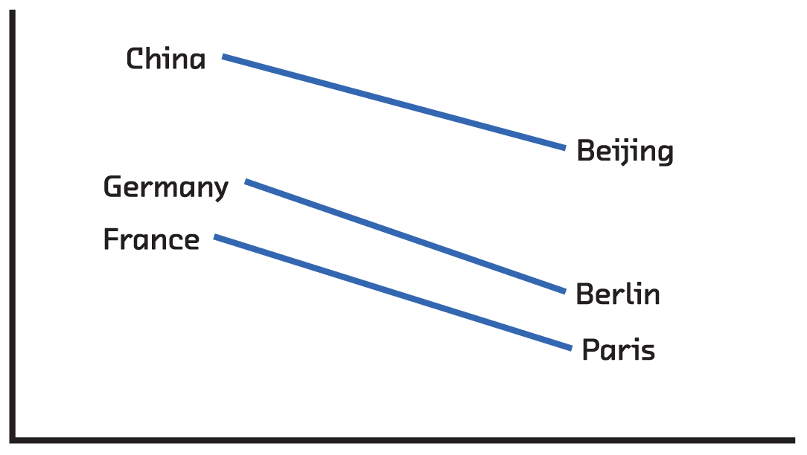
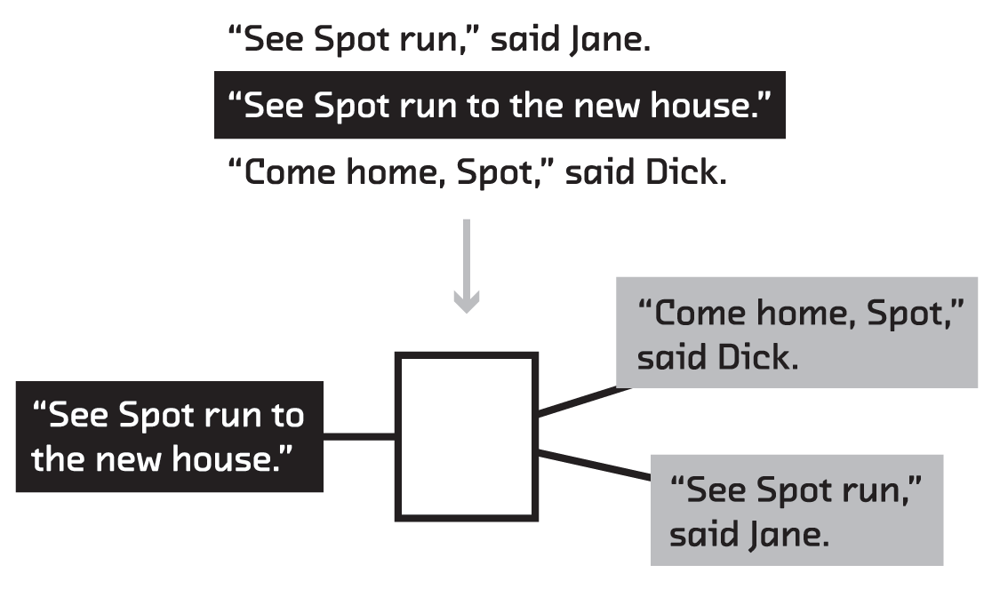

class: center, middle <img src="cover-ill.png" width="45%"> ## Summarization/Fast Forward Labs ??? So... - Summarization is intrinsically important - We built three working examples: one is extremely simple and demonstrates the steps at a high level, one uses a ~10 year old innovation called topic modelling, and one uses a couple of ~2 year old innovations called recurrent neural networks and language embeddings) - Step 1 of any good summarization algorithm is also step 1 of any other algorithm dealing with language, so these breakthroughs are important even if you don't have a need for summarization. It's fundamental to working with human language on computers. --- class: center, middle <img src="overview_extracted.png" width="100%"> ??? First let's talk about why it's an intrinsically important task. Wouldn't it be cool be able to extract the most salient points from a long document? --- class: center, full-bleed <img src="alphago.png" width="100%"> ??? Our main prototype does this. You're reading a long article on the New Yorker and you hit the "Brief" button, and you get the same article, but with the 5 top sentences highlighted. --- class: center, middle <img src="overview_multi.png" width="50%"> ??? Or how about being able to extract the most salient points from a big box of documents. Or from thousands of reviews of the same product. --- class: center, full-bleed <img src="strain.png" width="60%"> ??? We'll show a proof of concept that does this too, by extracting a manegable handful of representative sentences from the hundreds of thousands of words written about a popular product on Amazon. This is summarization. Automated and applied at scale, it's a breakthrough capability. --- class: center, middle, full-bleed, ff04 <!-- <div></div> --> ??? This is our report. I'm going to give take you through the most important points now. But I want to begin by saying _why now_. 1. More urgent than ever (more documents being generated) 2. Unstructured or semi-structured data is commonly collected, and training data is available. 3. Algorithmic advances, most importantly in neural networks 4. CPU and GPU power for using these algorithmic approaches is affordable and accessible. 5. Open source libraries --- class: center, middle # Luhn’s heuristic method ??? Demo [http://www.fastforwardlabs.com/luhn/](http://www.fastforwardlabs.com/luhn/) --- class: center, middle # Topic modeling with LDA ??? Luhn's method (and heuristics like it), are very simple. And they work OK in jargon-heavy documents. But they look only for common words. Not common _topics_. This brings us to topic modelling. In this approach, rather than look for common words in a document, and find sentences with lots of those, we're going to look for the dominant topics in a document, and find sentences that are themselves dominated by those topics. --- class: center, middle <img src="lda_topics.png" width="60%"> ??? The first question, though, is how do you find topics. That's what topic modeling, and Latent Dirichlet Allocation in particular, does. You run this algorithm (2003 original version, 2010 online) on an (ideally large) corpus of documents to learn topics. These are collections of words that co-occur. --- class: center, middle <img src="lda_evaluate.png" width="60%"> ??? Having learned the topics, you then look for those topics in a single document. That document can then be expressed as a mix of topics. --- class: center, middle, full-bleed <img src="strain.png" width="60%"> ??? Having found which topics dominate a document, you then find sentences that are dominated by each of the important topics. These form a representative sample of the ideas in the document. This approach works really well for product reviews, where that representativeness is important to the summary. There might be 5000 paragraph long reviews of a popular book. Together these are longer than the book itself, so that's too much information to take in. But the single number (3.8/5 or whatever) is too little. By displaying a representative sample, you can learn about the diversity of ideas expressed in the reviews. This technique is very practical, and like Luhn's method, doesn't need example summaries. And topic modeling is generally very useful when analysing trends in a corpus (e.g. customer support) But you can see here one of the limitations of this method: the topics don't come with names. But there are more fundamental problems make the summary less coherent: topic modelling ignores word order, and it necessarily throws away a lot of information by reducing a document to ~100 numbers. --- class: center, middle # Language embeddings and <br>recurrent neural networks ??? --- class: center, middle <img src="rnn-background_skipgram.png" width="100%"> ??? So we've got two things we want to fix with our approaches so far: retain more meaning for each word or sentence, and retain information about word or sentence order. Exciting breakthroughs on both these problems happened in the last couple of years. In the case of retaining more meaning it's language embeddings like word2vec. And in the case of using order, it's recurrent neural networks. Both of these came out of the deep learning community. Let's look at language embeddings. This is a way of taking a collosal corpus of text (say all the books that have ever been digitized) and using this to learn what words are likely to precede and follow a word. --- class: center, middle  ??? If you do this, it turns out you can turn each word into a list of a few thousand numbers. These numbers are like coordinates (just like 14th St and 5th Ave). And words that have coordinates close to each other are semantically related, and the directions and distances between these coordinates turn out to be semantically significant too. This is an example: the way you get from "China" to "Beijing" is the same way you get from "Germany" to "Berlin". This is all kind of vague, but it turns out that coordinates with these properties are essentially encoding the _meaning_ of words into numbers that computers can work with. This is a huge deal! --- class: center, middle  ??? And you don't have to stop at words. You can play the same game with sentences, predicting the senteces that come before and after. Now you've got "language embeddings". --- class: center, middle <img src="rnn-background_sequential.png" width="40%"> ??? So that's retaining word meaning. What about order? Arguments are built up. Hypotheticals explored. The first and last sentences carry special signficance. All this, which helps a human write a summary, is thrown away if you don't retain order. Traditional machine learning struggles here because of a simple almost mundane reason: documents (i.e. the input) are of different lengths. Bag of words and topic modelling are ways around this, but they all throw away order information to squeeze every document into the same size vector. But a couple of years ago, researchers figured out how to chain together neural networks (and crucially, how to train these chains). This allows input or output of arbitrary size to be fed in or out as a sequence with order. These are recurrent neural networks. --- class: center, full-bleed <img src="arstechnica.png" width="100%"> ??? We use these to techniques, language embeddings and recurrent neural networks in our summarization prototype, Brief, which is a browswer extension. Brief is trained on example summaries from a longread aggregator called The Browser. It uses word embeddings and knows how to identify salient sentences in the context of the other sentences in a document. --- class: center, full-bleed <img src="arstechnica-skim.png" width="100%"> ??? It also has skim mode. --- class: center, full-bleed <img src="alphago.png" width="100%"> ??? [http://www.fastforwardlabs.com/brief/](http://www.fastforwardlabs.com/brief/) Or demo the working prototype --- class: center, middle <img src="building_training.png" width="49%"> <img src="building_interpretability.png" width="49%"> ??? We talked about three approaches. The first, Luhn's method, which is a heuristic method, is really explanatory toy. It goes through the same fundamental steps as the others, but it's not a production approach. That said, it requires no training data at all, it's computationally extremely cheap, and the results are interpretable (which is useful when things go wrong). LDA requires a training corpus, but no model summaries. It's computationally more expensive, but not a significant engineering challenge. And the results generally make sense. In fact, the topics can be used for lots of other things including document clustering and bootstrapping article recommendation. The language embedding/RNN approach is, for now, the gold standard of extractive summarization. You need model summaries and computational resources. Despite this, this is the approach we're most excited about. --- class: center, middle <img src="rnn-background_legos.png" style="width:80%"> ??? That's because it's an approach that can be used any time a computer needs to work with the _meaning_ of language. By retaining meaning and order, recurrent networks are being used to make breakthroughs in language tasks like translation, simplification, caption creation, search and speech recognition every day. And the good news is, while neural networks have a tough reputation, the libraries are starting to reach the point where non-specialist engineers can work with them, and connect together (compose) neural networks like lego, for all kinds of input and output. We're really excited about this stuff! --- class: left, middle # Emerging applications - Alerting with summaries of breaking news - Autogenerated summaries of video/audio for mobile social media - Multi-document analysis to identify emerging topics or similar articles ??? Emerging applications of summarization and language embeddings/RNN --- class: center, middle ??? Thank you!